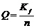
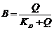
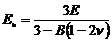
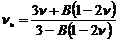
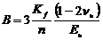
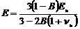
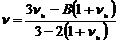

Undrained Elastic input type conversions
The following conversion formulas are used for the undrained elastic input types.
Undrained properties deduced from drained properties
n = n (unchanged by other values)
Kf = Kf (unchanged by other values)




Drained properties deduced from undrained properties
n = n (unchanged by other values)
Kf = Kf (unchanged by other values)



Note that in this conversion the Terzaghi assumption (Biot a = 0) is adopted.
where:
E = drained Young’s modulus
 = drained
Poisson’s ratio
= drained
Poisson’s ratio
KD = drained bulk modulus of the soil skeleton
Q = Second Biot parameter
Kf = fluid Bulk stiffness
n = porosity
Eu = undrained Young’s modulus of the saturated soil
 u =
undrained Poisson ratio of the saturated soil
u =
undrained Poisson ratio of the saturated soil